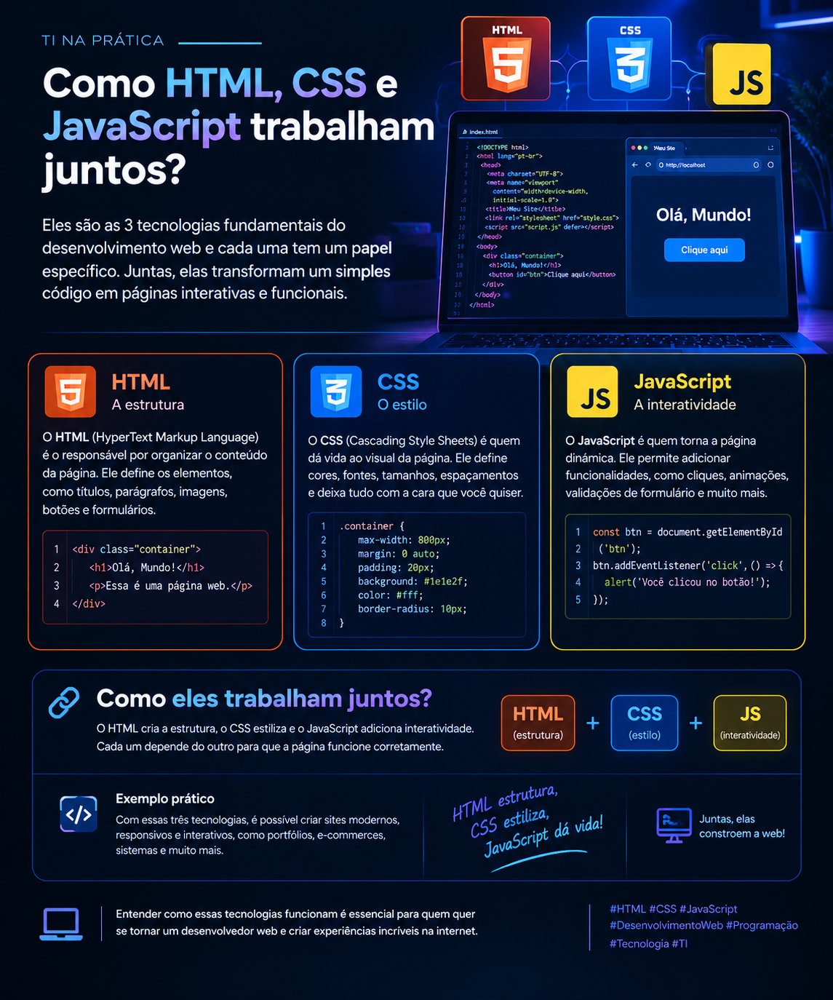
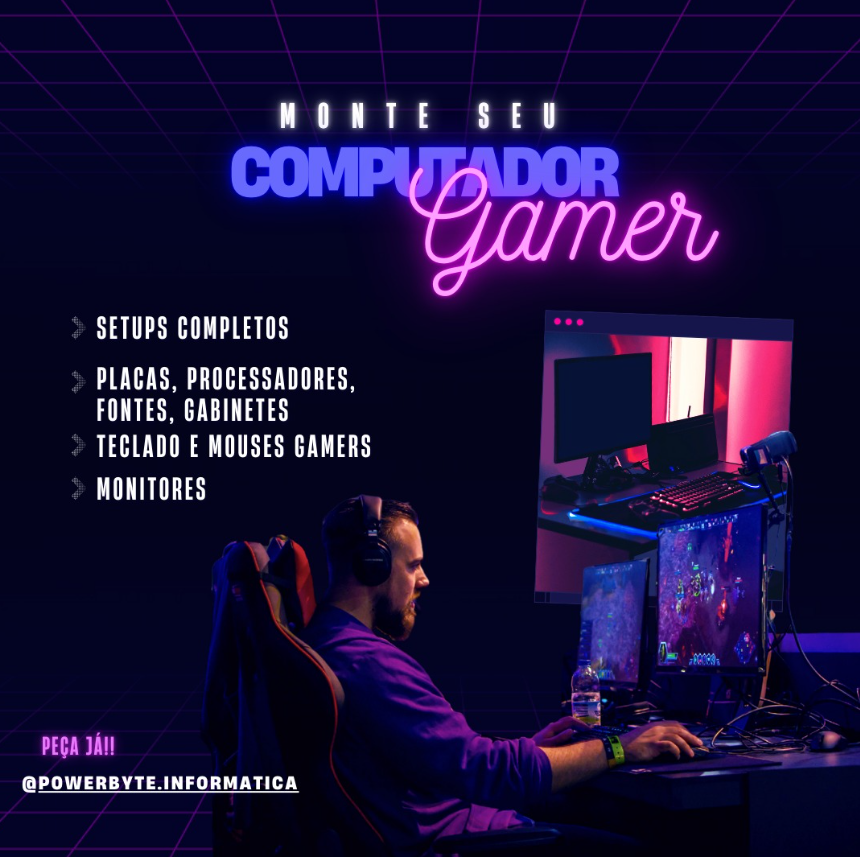
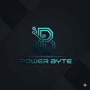

Design e expressão visual
Ferramentas para desenvolver layouts, peças gráficas e explorar ideias visuais.
Estudante de tecnologia, criador visual e apaixonado por transformar ideias em projetos. Conheça um pouco do meu trabalho.


Peças que exploram maneiras de comunicar ideias, marcas e temas de tecnologia por meio do visual.
Uma seleção de trabalhos visuais para marcas e negócios.

VER TRABALHOS ↗Sou Vinicius Scherer Di Giorno, estudante de tecnologia que gosta de aprender, criar e compartilhar conhecimento.
Curso Análise e Desenvolvimento de Sistemas na UNICID, no Tatuapé. Tenho interesse em programação, desenvolvimento web, banco de dados e inteligência artificial, e busco transformar o que aprendo em projetos práticos.
Na faculdade, participei de um projeto de banco de dados em equipe para organizar rotinas. Também exploro projetos pessoais e crio conteúdos visuais sobre tecnologia. Gosto de entender como as coisas funcionam, encontrar soluções e explicar ideias de forma simples.
Valorizo a colaboração, a comunicação e o aprendizado contínuo. Quero crescer na área de tecnologia, contribuir com equipes e enfrentar novos desafios.
Tecnologias e ferramentas que fazem parte dos meus estudos e trabalhos.
Ferramentas para desenvolver layouts, peças gráficas e explorar ideias visuais.
Linguagens que utilizo e estudo para construir projetos e desenvolver soluções.
Recursos para apoiar pesquisas, experimentos, fluxos de trabalho e projetos digitais.
Atuação em informática, com atendimento, contato com equipamentos e comunicação visual.
Gostou do que viu? Entre em contato para conversarmos sobre oportunidades e projetos.